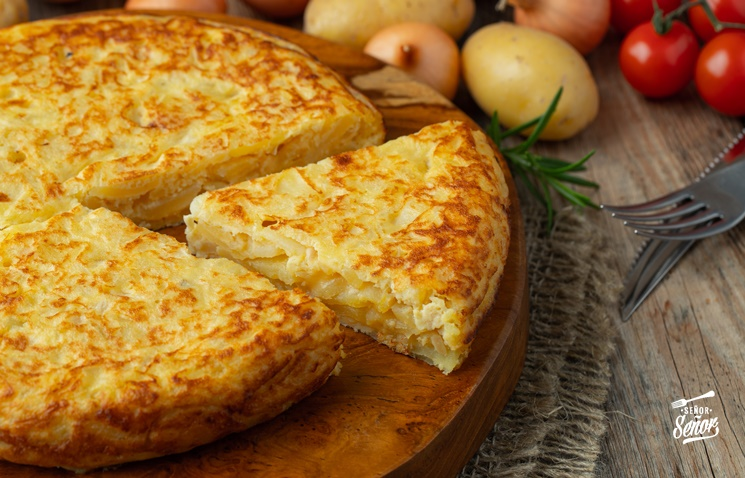

Tortilla

La tortilla de patatas o tortilla española es una tortilla u omelet a la que se le agrega patatas troceadas.
Ingredientes
- 3 papas medianas
- 1 cebolla mediana
- 4 huevos
- aceite
- sal y pimienta a gusto
Receta
- Lavar y cortar las papas. Freírlas en abundante aceite, de esta forma no absorben tanto aceite. Retirarlas cuando estén doraditas.
- Mientras se hacen las papas cortamos la cebolla como prefieran y en una sartén con un poquito de aceite y sal, las cocinamos hasta que estén transparente.
- Cuando ya tenemos los dos ingredientes los colocamos en un bowl y los mezclamos.
- Ahora empezamos a poner los huevos, uno a uno, primero los ponemos en un potecito y los vamos agregando por las dudas si alguno está feo. Condimentamos con lo que prefieran y mezclamos bien.
- Ahora vamos a cocinarla en un sartén con un poquito de aceite, la que prefieran, una grande o chica. Cómo yo la hice en una chica puse la mitad de la mezcla. Cuando está dorada de abajo, separó bien los bordes y con mucho cuidado la doy vuelta con la ayuda de un plato.
- Terminamos de cocinarla y lista nuestra tortilla, clásica y sabrosa.